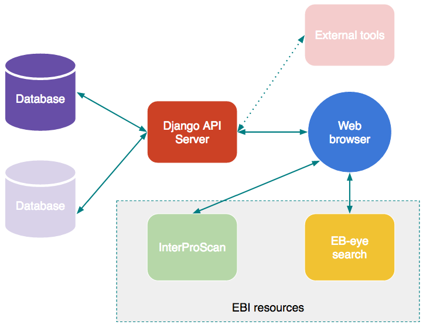
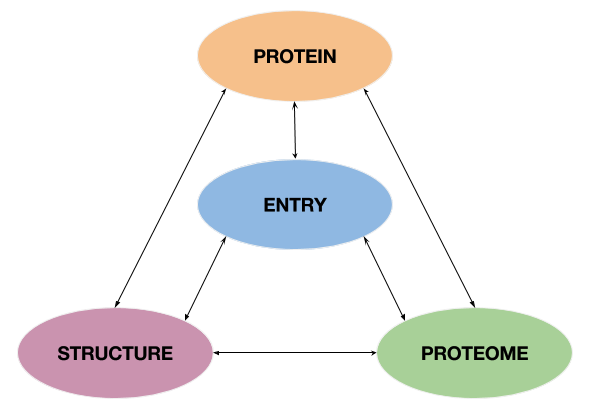
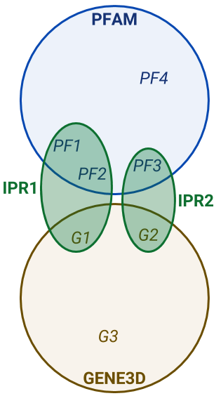
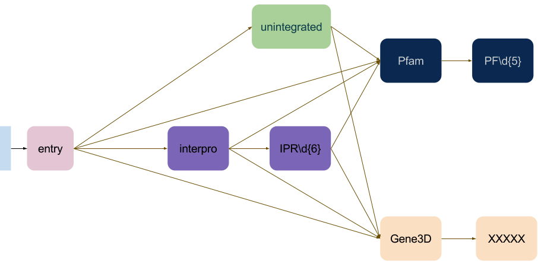
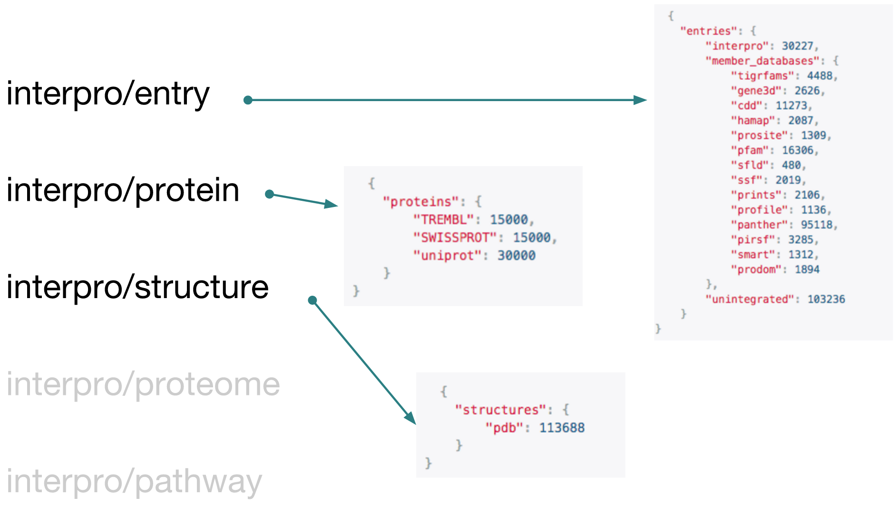
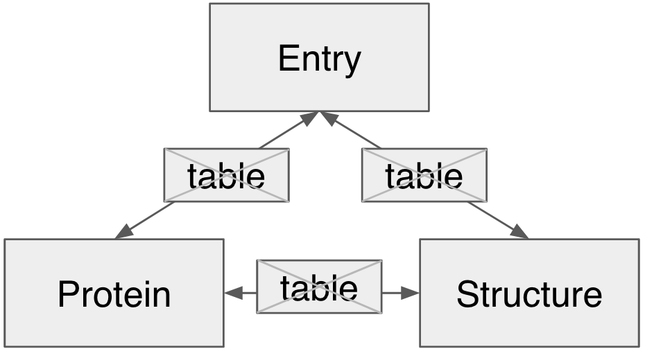
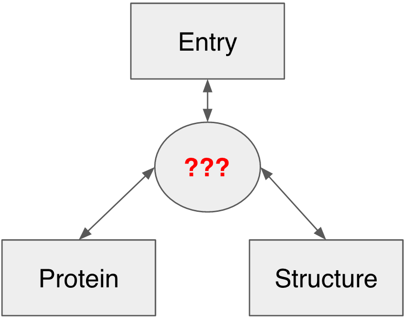
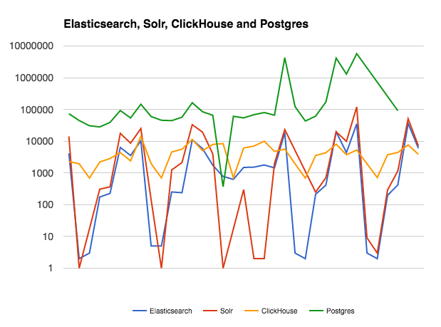
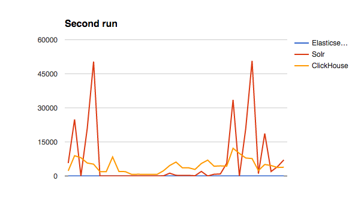

Choosing the storage tech for the InterPro API
Protein Families Meeting
Gustavo A. SalazarApril 2017
Interhelp
Is there a method, either through an InterPro API, or through InterProScan to search the InterPro database not by sequence but instead by protein name?
I'm looking for a RESTful web service to query InterPro with a protein ID/Access like in the Interpro home page (http://www.ebi.ac.uk/interpro) and retrieving the results in JSON or XML.
is there a way to access the InterPro Domain Architecture (IDA) tool programmatically, e.g., via a REST API?
Is there any way to search for associated proteins and the relative coordinate with a Pfam ID from REST API please?
I'd like to ask whether there is a way to extract all protein domains in pfam and for instance, define which domains are present in a protein via web api?
InterPro 7: API
InterPro 7: Architecture

URL structure
https://<ServerName>/
[ENTRY]/
[PROTEOME]/
[PROTEIN]/
[STRUCTURE]

[Block]:
[ENDPOINT]/
[DATABASE]/
[ACCESSION]
Entry: URL structure
 
https://<ServerName>/entry
https://<ServerName>/entry/interpro
https://<ServerName>/entry/pfam
https://<ServerName>/entry/interpro/pfam
https://<ServerName>/entry/interpro/pfam/PF00001
Endpoints - Nov 2016

Data organization
First attempt: MySQL
 Pros- Reliable
- Ease of cross-table
- Returns exact counts
- Can select subsets of results
- Lots of experience in team
- High support in Django - DRF
- EBI supported
Cons
- SLOW for Protein related queries
- Scalability
Data organization
Second attempt: Hybrid (MySQL + No-normalized DB)
 Pros- Number of JOINS reduced.
- Django models are conserved
- Speed at querying
- Sharding
- Replicates
Cons
- No SQL
- Low support in Django
- Either slow or unreliable for writing operations
- Some of these technologies are too new
Strategy
- Shortlist potential technologies to use
- Define a common dataset
- Define a representative set of queries
- Test performance
Technologies to test
| Type | Search | Search | Column DB | Column DB (plugin) |
| Interface | HTTP | HTTP | HTTP | ODBC, JDBC |
| Query Language | Lucene (extended) | Lucene (extended) | SQL (subset) | SQL |
| Aggregations | Facets | Aggregations | SQL | SQL |
| JSON support | Yes | Yes | Yes | N/A |
| Type of server | Java | Java | Native | Native |
Data set
Number of documents: 340,480,753
Entry (154,154)
| InterPro | 29,965 |
| Panther | 86,618 |
| ProDom | 1,844 |
| Smart | 1,312 |
| Pfam | 16,282 |
| TIGRFAMs | 4,488 |
| CDD | 11,005 |
| HAMAP | 2,087 |
| Merops | 1,115 |
Protein (60,604,408)
| Swiss-Prot | 536,539 |
| TrEMBL | 60,095,598 |
Structure (115,743)
| PDB | 115,743 |
Queries
Filter:
- All documents
- Swissprot proteins
- Trembl proteins
- Specific accession
- With a structure
- Specific structure
- Unintegrated entries
Actions:
- group by entry_db and count
- group by entry_db and count unique
- group by protein_db and count unique
- get unique entries
- get unique entries (plus filter)
Overall Results
| Number of tests | 35 | 35 | 35 | 30 |
| Total Execution Time (min) | 6.03 | 2.89 | 2.68 | 287.60 |
Comparison - First run
Comparison - Second run
And the winner is...
La La Land...
Elasticsearch
- Second Fastest First run
- Best in second run
- Big community
- Some EBI projects already use it.
- Easy development after having an API prototype working with Solr
Potential Future Work
- Data source exclusively in elasticsearch
- Investigate sharding and replicates
- Stress testing